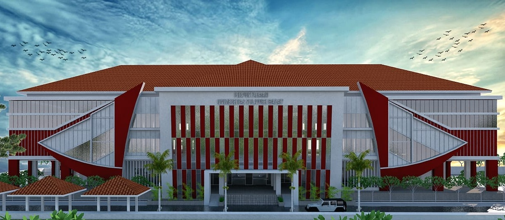

Profil

Cita-cita pendirian Universitas Sulawesi Barat merupakan pre determinan dan satu paket dengan perjuangan pembentukan Provinsi Sulawesi Barat, setelah provinsi Sulawesi Barat terbentuk pada 22 September 2004, Tim Persiapan Pendirian Universitas Sulawesi Barat lalu fokus pada perjuangan untuk mendapatkan izin operasional Universitas Sulawesi Barat.
Universitas Sulawesi Barat memperoleh izin operasional melalui Keputusan Menteri Pendidikan dan Kebudayaan Nomor: 229/D/0/2007 tanggal 31 November 2007 yang dikelola oleh Yayasan Pendidikan Indonesia Sulawesi Barat di bawah koordinasi Kopertis Wilayah IX Sulawesi. Tanggal 13 Mei 2013 Universitas Sulawesi Barat berubah status dari Perguruan Tinggi Swasta (PTS) menjadi Perguruan Tinggi Negeri (PTN) melalui Peraturan Presiden Republik Indonesia Nomor: 36 Tahun 2013 tentang Pendirian Sulawesi Barat. engan adanya Peraturan Presiden Republik Indonesia Nomor: 36 Tahun 2013 tentang Pendirian Sulawesi Barat berarti bahwa Yayasan Pendidikan Indonesia Sulawesi Barat telah mengalihkan pengelolaan dan aset Universitas Sulawesi Barat kepada Menteri Pendidikan dan Kebudayaan sesuai dengan ketentuan peraturan perundang-undangan.
Setelah menjadi PTN maka pada tanggal 19 Desember 2013 Dr. Ir. Akhsan, MS. dilantik menjadi Rektor Universitas Sulawesi Barat dengan Surat Keputusan No. 04/MPK.A4/KP/2013 oleh Menteri Pendidikan dan Kebudayaan di Jakarta.